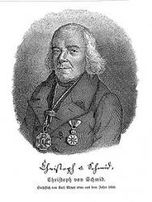

|
|
【親愛小朋友啊】 |
|
1 O come, little children, O come, one and all, 2 Behold, in the manger, that strange little bed, 3 On hay and on straw in the manger He lies; 4 O kneel with the shepherds in worshipful prayer 5 O dearest, O sweetest, O wonderful Child, 6 Receive then our hearts, which we offer to Thee,
|
親愛小朋友啊，大家一起來，
|
|
https://hymnary.org/hymn/HCH11927/page/349
|
|
|
|
|


https://youtu.be/qHolEuVKwik -
Mormon Tabernacle Choir German Carol “O Come, Little Children”
https://youtu.be/uwUw8UTbTm4
| Text: | Oh, Come, Little Children, Come One And Come All |
| Author: | C. v. Schmidt |
| Tune: | [Oh, come, little children, come one and come all] |
| Composer: | J. A. P. Schulz |
| Short Name: | Christoph von Schmid |
| Full Name: | Schmid, Christoph von, 1768-1854 |
| Birth Year: | 1768 |
| Death Year: | 1854 |
Johann Christoph von Schmidt DT Germany 1768-1854.
Born at Dinkelsbuhl, Bavaria, Germany, the oldest of nine children and son of a civil servant who worked for the Teutonic Order, he received private lessons in the monastery and attended Catholic Latin school for two years, then attended the Dillingen high school, afterward tutoring for a wealthy family. He enrolled in the Episcopal University in Dillingen and studied philosphy for two years, then theology for four years. He was ordained a Roman Catholic priest in 1791. He served as parish vicar in Nassenbeuren, then chaplain at Seeg. In 1796, when he was placed as the head of a large school in Thannhausen, where he taught for many years. From 1816-1826 he was parish priest at Oberstadion in Wurttemberg. In 1826 he was appointed Canon of the Augsburg Cathedral. In 1832 he was administrator for the school system for Swabia and Neuburg. In 1837 he was raised by Bavarian King Ludwig I to personal nobility, a knight of the Order of Merit of the Bavarian Crown. In old age he received numerous honors, and his 80th birthday was a public holiday in Augsburg. The University of Prague awarded him the title of Doctor of Theology. In addition to being an educator, he was also a prolific author and writer of children’s stories. He would often read his stories to the school children after classes. His stories became very popular and were translated into 24 languages. His general theme in story writing was to awaken a practical piety in children. Wrote 40 story books for children. He also wrote poetry. His most famous work: “A basket of flowers”. He died of cholera at Augsburg, Germany. In 1857 his autobiography was published.
John Perry
| Short Name: | Christoph von Schmid |
| Full Name: | Schmid, Christoph von, 1768-1854 |
| Birth Year: | 1768 |
| Death Year: | 1854 |
Johann Christoph von Schmidt DT Germany 1768-1854.

Born at Dinkelsbuhl, Bavaria, Germany, the oldest of nine children and son of a civil servant who worked for the Teutonic Order, he received private lessons in the monastery and attended Catholic Latin school for two years, then attended the Dillingen high school, afterward tutoring for a wealthy family. He enrolled in the Episcopal University in Dillingen and studied philosphy for two years, then theology for four years. He was ordained a Roman Catholic priest in 1791. He served as parish vicar in Nassenbeuren, then chaplain at Seeg. In 1796, when he was placed as the head of a large school in Thannhausen, where he taught for many years. From 1816-1826 he was parish priest at Oberstadion in Wurttemberg. In 1826 he was appointed Canon of the Augsburg Cathedral. In 1832 he was administrator for the school system for Swabia and Neuburg. In 1837 he was raised by Bavarian King Ludwig I to personal nobility, a knight of the Order of Merit of the Bavarian Crown. In old age he received numerous honors, and his 80th birthday was a public holiday in Augsburg. The University of Prague awarded him the title of Doctor of Theology. In addition to being an educator, he was also a prolific author and writer of children’s stories. He would often read his stories to the school children after classes. His stories became very popular and were translated into 24 languages. His general theme in story writing was to awaken a practical piety in children. Wrote 40 story books for children. He also wrote poetry. His most famous work: “A basket of flowers”. He died of cholera at Augsburg, Germany. In 1857 his autobiography was published.
John Perry
Christoph von Schmid
{kind=link}
Christoph von Schmid (15 August 1768 Dinkelsbühl, Bavaria – 3 September 1854 Augsburg) was a writer of children's stories and an educator. His stories were very popular and translated into many languages. His best known work in the English-speaking world is The Basket of Flowers (Das Blumenkörbchen). In this work, fifteen-year-old Mary is taught all the principles of godliness through the flowers planted and cared for by her father, James, who is the king's gardener. When she is falsely accused of stealing and temporarily banished, her friends try to find some evidence in order to prove that Mary didn't do anything wrong until it's too late. In recent years, The Basket of Flowers has been published in the United States as part of the Lamplighter Family Collection.
Biography[edit]
Christoph von Schmid studied theology and was ordained priest in the Catholic Church in 1791. He then served as assistant in several parishes until 1796, when he was placed at the head of a large school in Thannhausen, where he taught for many years. From 1816 to 1826, he was parish priest at Oberstadion in Württemberg. In 1826, Christoph von Schmid was appointed canon of the Augsburg Cathedral, where he died of cholera at the age of eighty-seven.[1]
Schmid began writing books for children, teaching Christian values, shortly after being placed at the school in Thannhausen.[1] His first work was a Bible history for children (1801). Schmid's original purpose for writing was to reward his students after school by reading his books to them. Schmid continued with his calling as a writer of children's books throughout his long life.
Schmid's writings have been translated into 24 languages. His principal juvenile works are Biblische Geschichte für Kinder, Der Weihnachtsabend, Genovefa, Die Ostereier, Das Blumenkörbchen, and Erzählungen für Kinder und Kinderfreunde (1823–1829).[1] Die Ostereier (Easter Eggs, 1816) became so popular that he started signing himself as "author of Easter Eggs."[2] Many say that he was the pioneer of books for youths.
His stories usually center around a disturbance to the happiness of good people, which God's righteousness finally fixes, the goal of the writer being to awaken a practical piety in his youthful readers. He also wrote poems which are scattered here and there in his work.[2]
His autobiography, Erinnerungen aus meinem Leben, was published in 1853–1857.
References[edit]
-
^ a b c This
article incorporates text from a publication now in the public
domain: Gilman,
D. C.; Peck, H. T.; Colby, F. M., eds. (1905). New
International Encyclopedia (1st ed.).
New York: Dodd, Mead.
{{cite encyclopedia}}: Missing or empty|title=(help) - ^ a b Binder, "Schmid, Christoph von" in Allgemeine Deutsche Biographie, Band 31 (Leipzig, 1890), S. 657-659. (in German)
https://en.wikipedia.org/wiki/Christoph_von_Schmid